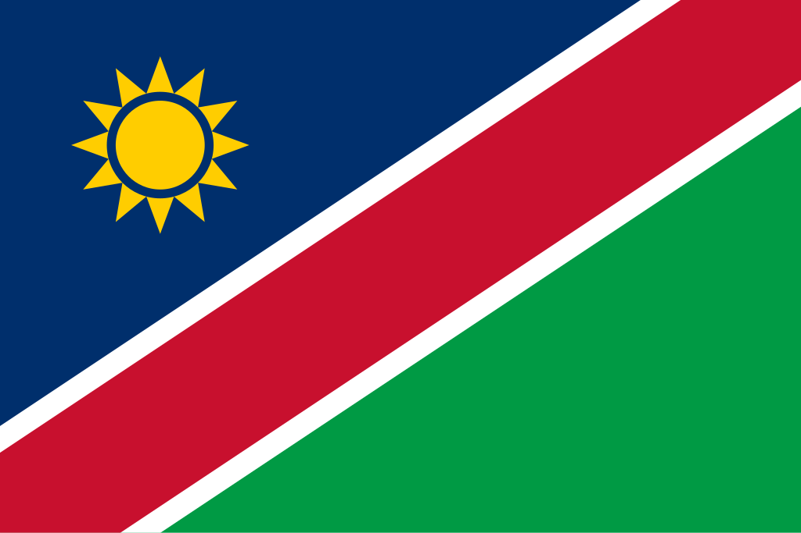

Namíbia
 A Namíbia, oficialmente República da Namíbia, é um país localizado no sudoeste da África, fazendo fronteira com Angola, Zâmbia, Botsuana e África do Sul, e banhado pelo Oceano Atlântico a oeste. Com aproximadamente 825 mil km², sua capital é Windhoek, localizada no centro do país. A população namibiana é formada por diversos grupos étnicos, incluindo os ovambos, hereros, nama, damaras e san (bosquímanos), que preservam suas tradições culturais e línguas locais. O país possui estabilidade política e é considerado uma democracia consolidada desde a independência em 1990. Antes disso, foi administrado pela Alemanha como colônia (1884–1915) e depois pela África do Sul sob mandato da ONU. Hoje, a Namíbia é membro da ONU, União Africana e da SADC (Comunidade de Desenvolvimento da África Austral), e sua economia é baseada em mineração, agricultura e turismo, com destaque para diamantes, urânio e minerais raros.
História
A Namíbia tem uma história marcada por migrações de povos africanos, colonização europeia e lutas por independência. Povos indígenas, como os san, damaras e hereros, habitaram a região por milhares de anos. No final do século XIX, a Namíbia tornou-se colônia alemã conhecida como Sudoeste Africano Alemão. Durante o período colonial, ocorreram conflitos, incluindo o genocídio herero e nama (1904–1908), que dizimou grande parte dessas populações. Após a Primeira Guerra Mundial, a África do Sul assumiu a administração sob mandato da Liga das Nações, promovendo políticas de segregação e apartheid.
O movimento de libertação nacional, liderado pela Organização do Povo do Sudoeste Africano (SWAPO), ganhou força ao longo das décadas de 1960 e 1970. Após longas negociações e intervenção da ONU, a Namíbia conquistou sua independência em 21 de março de 1990, estabelecendo uma república democrática e iniciando processos de reconciliação nacional e desenvolvimento socioeconômico.
Cultura
A cultura da Namíbia é marcada pela diversidade de povos e tradições locais. Os ovambos predominam na população, mas grupos como hereros, nama, damaras e san contribuem para um mosaico cultural rico e variado. A música e a dança tradicionais são preservadas em rituais e celebrações, enquanto a arte e o artesanato, incluindo esculturas em madeira, cestos e tecidos, refletem a herança cultural do país.
A língua oficial é o inglês, adotada após a independência, mas o alemão, africâner e diversas línguas indígenas, como oshiwambo, nama e herero, continuam sendo amplamente usadas. Festividades culturais e religiosas, bem como tradições familiares, são elementos centrais na vida social namibiana. A culinária combina influências africanas, alemãs e portuguesas, com pratos típicos à base de carne, milho, mandioca e vegetais locais.


Clima
A Namíbia apresenta clima predominantemente desértico e semiárido, com temperaturas elevadas durante o dia e quedas significativas à noite. O deserto da Namíbia, incluindo o deserto do Namibe, domina grande parte do território, apresentando paisagens áridas e dunas impressionantes. As áreas costeiras são influenciadas pela Corrente de Benguela, que provoca neblina frequente e mantém temperaturas amenas. As chuvas são escassas e concentradas no verão, afetando diretamente a agricultura e a disponibilidade de água.
Biodiversidade
A Namíbia possui biodiversidade significativa, adaptada a ambientes áridos e semiáridos. No interior e nas savanas, habitam elefantes, leões, rinocerontes, girafas, zebras e antílopes. Nas áreas desérticas, espécies como oryx, springbok e diversos répteis sobreviveram a condições extremas. A costa atlântica é lar de leões-marinhos, focas e aves marinhas.
O país possui diversas áreas protegidas, incluindo o Parque Nacional Etosha, que é referência internacional em conservação, e reservas privadas que promovem turismo sustentável e preservação de espécies ameaçadas. Esforços de conservação são vitais para equilibrar desenvolvimento econômico e preservação ambiental.


Cidades
As cidades da Namíbia combinam centros administrativos, comerciais e históricos. Windhoek, a capital, é o principal centro político, econômico e cultural, com infraestrutura moderna e diversidade urbana. Outras cidades importantes incluem Swakopmund, conhecida por sua arquitetura alemã e turismo costeiro; Walvis Bay, polo portuário e econômico; e Rundu e Oshakati, centros regionais que conectam áreas rurais e urbanas. As cidades são fundamentais para a administração, educação, serviços e desenvolvimento econômico do país, oferecendo centros de integração regional e oportunidades culturais.